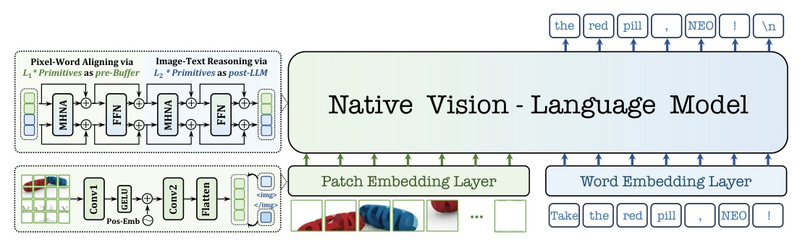
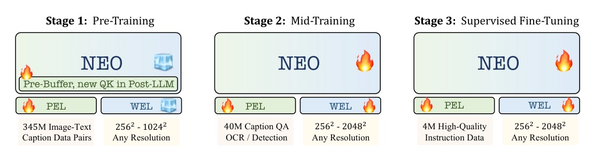
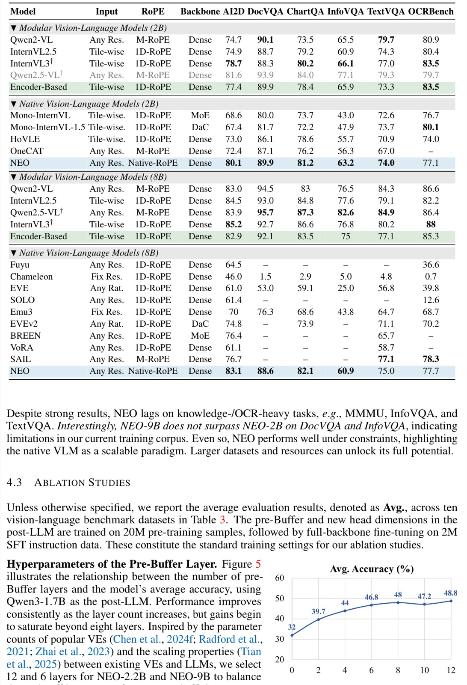
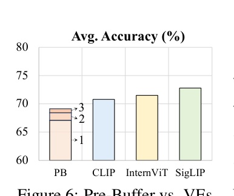
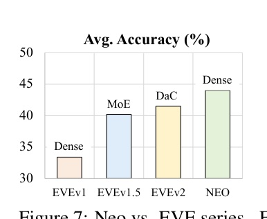

From Pixels to Words — Towards Native Vision-Language Primitives at Scale
NEO 的賭注很乾脆：不要把 vision encoder 接在 LLM 外面；把對齊、編碼與推理都做成同一個 native primitive。
NEO 的關鍵不是「把 image token 塞進 LLM」。
而是讓 位置、注意力、初始化 都承認 image 與 text 的差異。
主流 modular VLM 很強，但介面本身也在製造成本
- 模組分工：vision encoder 的雙向視覺表徵，接上 projector 與 causal LLM。
- 代價：異質架構、多階段訓練、後期 alignment，以及固定視覺 encoder 的 inductive bias。
- 原生 VLM 的難處：直接把像素 mapping 進既有 LLM，可能傷害語言能力、也難穩定收斂。
- NEO 的問題定義：能否從第一原理做出同時負責 pixel-word encoding、alignment、reasoning 的單一 primitive？
不是砍掉 vision encoder；是把它的好處內化進同一個 block
MODULAR VLM
- Vision encoder：雙向 attention、空間位置設計。
- LLM：causal attention、語言先驗。
- 靠外接 projector / alignment 接起兩個系統。
NEO / NATIVE VLM
- Patch + word embedding 後直接進 decoder-only backbone。
- 同一 primitive 同時保留 image 的雙向交互與 text 的 causal generation。
- pre-Buffer 先學對齊；post-LLM 保住語言推理。

四個可分開驗證的設計承諾
- Native primitive：MHNA + Native-RoPE + mixed masking，不把 image 當成普通一維 text。
- pre-Buffer / post-LLM：前半段從零學 pixel-word alignment；後半段部分繼承 LLM。
- 三階段 end-to-end training：345M pretrain → 40M mid-train → 約 4M SFT。
- 可擴展 dense native VLM：2.2B / 9B 版本在視覺理解 benchmark 逼近或超過既有 native baseline。
一個 native primitive 必須同時解三件事：
image 的空間關係、text 的順序關係、以及 pixel-word 的交互。
NEO：輕量 patch / word embedding + monolithic decoder-only backbone

Native VLM Primitive：新增 H/W 空間 QK，保留 LLM 的語言結構

- RMSNorm 與 SwiGLU 延續 LLM layer；Q/K head 加入新的 H、W 維度。
- 額外參數約為原 Transformer block 的 10%。
Native-RoPE：把 temporal 與 spatial 的座標尺度拆開
- Text：保留 T index，H/W 為 0。
- Image：單一 image 固定 T、每個 patch 有自己的 H/W。
- 跨 image pair：相同空間位置共享 H/W dependency。
- T 服務語言與長程關係；H/W 服務局部空間關係。
- 不同尺度不再強迫共用同一組 RoPE frequency。
- 這也避免長 text index 壓壞 image 的 spatial dependency。
Mixed attention：對 image 雙向，對 text 因果
IMAGE TOKENS
- 同一 image 視為 unified meta-unit。
- 全雙向 attention，像 vision encoder 一樣允許所有 patch 交互。
- 完整 spatial / contextual dependency。
TEXT TOKENS
- 維持 standard causal attention。
- 保留 autoregressive generation。
- 以 block-wise mixed mask 與 image 互動。
pre-Buffer 先把像素接進語義空間；post-LLM 把既有語言能力保留下來
PRE-BUFFER
- 隨機初始化。
- 輸入：pixel / word token。
- 角色：pre-align、可重用。
- pre-training 後是可復用資產。
POST-LLM
- 部分由 pretrained LLM 初始化。
- 繼承 temporal RMSNorm / FFN / QK / QK-Norm。
- 角色：full-align + reasoning。
- H/W K 零初始化；H/W QK-Norm: beta=0, gamma=1。
三階段不是裝飾：每一段都在解除不同的 optimization constraint

- Pre-training：345M web/synthetic image-caption pairs；freeze 大部分 LLM 來保住語言知識。
- Mid-training：40M caption / conversation / OCR / detection，整網路更新。
- SFT：約 4M bilingual instruction，補 instruction following 與真實部署情境。
不是單一 leaderboard：paper 用多種視覺理解壓力測試
- Qwen3-1.7B → NEO-2.2B；Qwen3-8B → NEO-9B。
- NEO-2.2B / 9B 的 pre-Buffer 分別為 12 / 6 layers。
- VLMEvalKit 覆蓋 diagram/document/chart/OCR、reasoning，以及 hallucination benchmarks。
- 訓練硬體：16 個 8-GPU（80G）nodes。
2B：原生 backbone 已接近 paper 的 encoder-based 對照
| 2B model | MMMU | MMB | SEED-I | POPE | HallB |
|---|---|---|---|---|---|
| NEO (Qwen3-1.7B) | 48.6 | 76.0 | 74.2 | 87.5 | 43.1 |
| Encoder-Based (Qwen3-1.7B) | 47.1 | 75.8 | 73.6 | 87.0 | 44.4 |
| InternVL2.5 | 43.6 | 74.7 | — | 90.6 | 42.6 |
| Mono-InternVL-1.5 | 39.1 | 64.0 | 66.9 | — | 32.5 |
8B：NEO 對原生 VLM 的優勢，最清楚落在圖表、文件與視覺問答
| 8B native model | AI2D | DocVQA | ChartQA | TextVQA | OCRBench |
|---|---|---|---|---|---|
| NEO | 83.1 | 88.6 | 82.1 | 75.0 | 77.7 |
| SAIL | 76.7 | — | — | 77.1 | 78.3 |
| EVEv2 | 74.8 | — | 73.9 | 71.1 | 70.2 |
| Emu3 | 70.0 | 76.3 | 68.6 | 64.7 | 68.7 |
NEO 的 gain 不是只靠「更多資料」：
在相同 backbone / 控制資料的比較裡，mixed attention + Native-RoPE + pre-Buffer 仍留下可辨識的增益。
Native-RoPE 與 mixed attention 都是必要條件
| Configuration | Attention | RoPE | Avg. |
|---|---|---|---|
| A | Causal | 1D-RoPE | 39.1 |
| F | Mixed | Video-RoPE | 43.2 |
| G | Causal | Native-RoPE | 40.3 |
| H | Mixed | Native-RoPE | 44.0 |
| I | Mixed | Native-RoPE (H/W=1M) | 42.0 |
- Mixed attention 對 causal attention 有一致增益。
- Native-RoPE 對各種先前 RoPE 至少提升 0.8 average point。
- H/W base frequency 改成 1M 會傷害 local semantics。
pre-Buffer 的深度不是越多越好：八層後報酬開始飽和

- 作者為 NEO-2.2B 選 12 layers、NEO-9B 選 6 layers，平衡 performance 與 efficiency。
- 這是把「visual encoder 的容量」改成 pre-Buffer 深度這個可調旋鈕。
可重用的 pre-Buffer 是成本論點，不只是架構論點

- PB3 在作者的平均測試上僅落後 CLIP / InternViT / SigLIP 1.7 / 2.4 / 3.7%。
- 僅用 22M training samples 的 PB3，距離 full NEO 為 2.5%。

- 控制為 Qwen3-1.7B：EVEv1 / v1.5 / v2 為 33.4 / 40.2 / 41.5。
- NEO 為 44.0，作者據此將增益歸因於 primitive 與 training design，而非換更大的 base LLM。
論文自己留下的邊界，比漂亮平均分數重要
- Knowledge / OCR-heavy tasks：MMMU、InfoVQA、TextVQA 仍是明確短板。
- Scaling 不保證單調改善：NEO-9B 沒有超過 2.2B 的 DocVQA 與 InfoVQA。
- 資料仍是瓶頸：作者將與頂尖 modular VLM 的差距歸因於 data scale / quality。
- 系統成本：雖是 encoder-free，實驗仍依賴三階段訓練和 16 x 8-GPU 80G nodes。
給做 VLM 的工程判讀：三個能帶走的結論
- 不要把 3D position encoding 當小修補：T/H/W 的尺度與語義不同，position design 會直接改 local reasoning。
- 不要用同一種 mask 處理兩種 modality：image 的 bidirectional context 與 text 的 causal generation 需要共存。
- 把可重用 capacity 拆出來：pre-Buffer 讓 visual learning 資產化，而 post-LLM 把語言先驗留在穩定端。
one native VLM primitive should: (i) effectively align pixel and word representations within a shared semantic space; (ii) seamlessly integrate the strengths of formerly separate vision and language modules; (iii) inherently embody various cross-modal properties.
一個原生 VLM 元件需要在共同語義空間對齊 pixel 與 word、吸收視覺與語言模組原本各自的長處，並天然承載跨模態編碼、對齊、推理所需的性質。Abstract, p.1
Deck evidence ledger
- Paper version read: arXiv:2510.14979v2, dated 2026-02-21.
- PDF, arXiv HTML dump, raw section extraction, figure manifest, and knowledge spec are archived beside this deck.
- OpenReview forum DF6udvxuvY was identified; reviewer JSON request returned HTTP 403, so no review-score claim appears in this deck.
- All quoted benchmark numbers carry paper table/page citations.
Native VLMs need native contracts.
NEO’s useful claim is architectural: preserve visual and language inductive biases inside one trainable primitive.